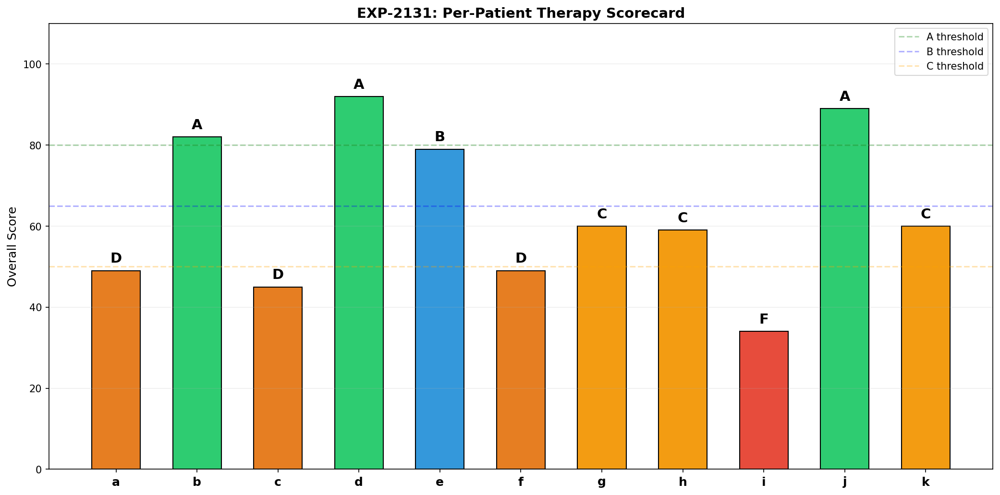
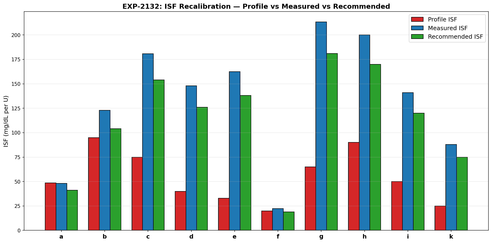
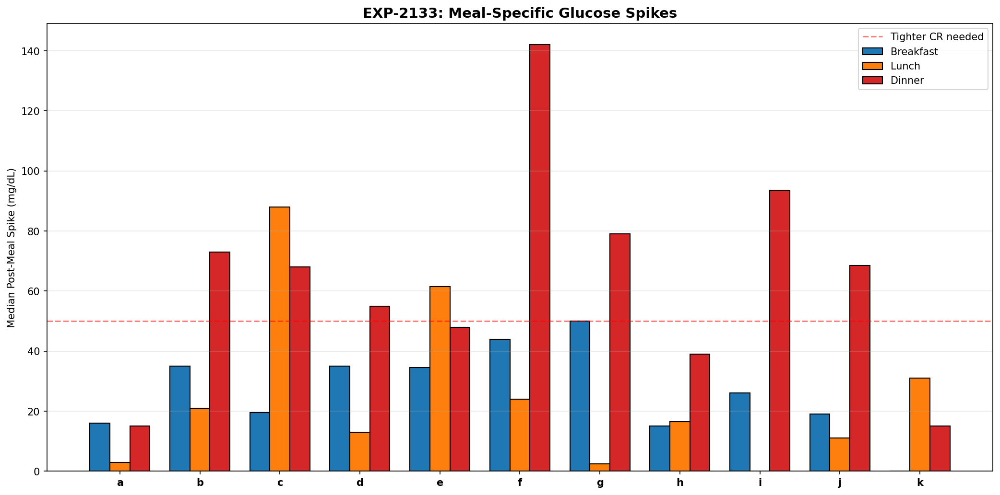
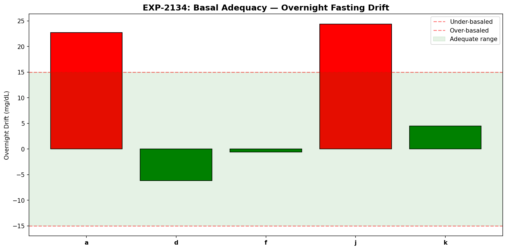
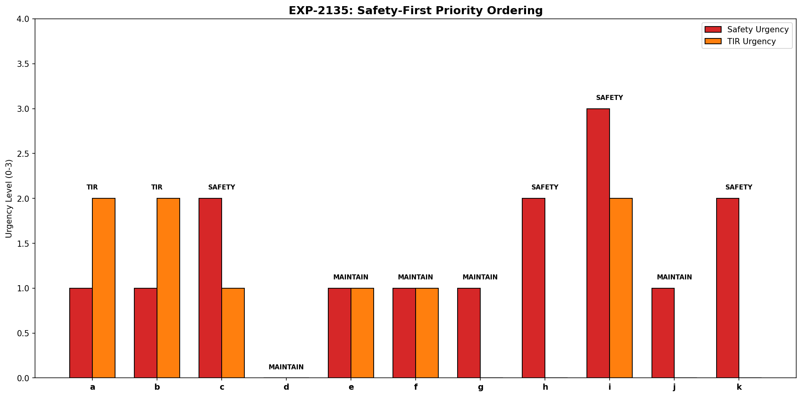
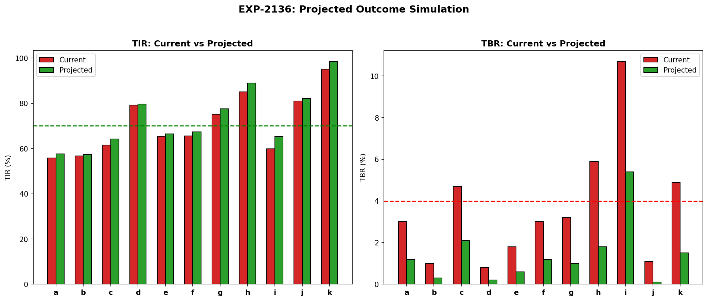
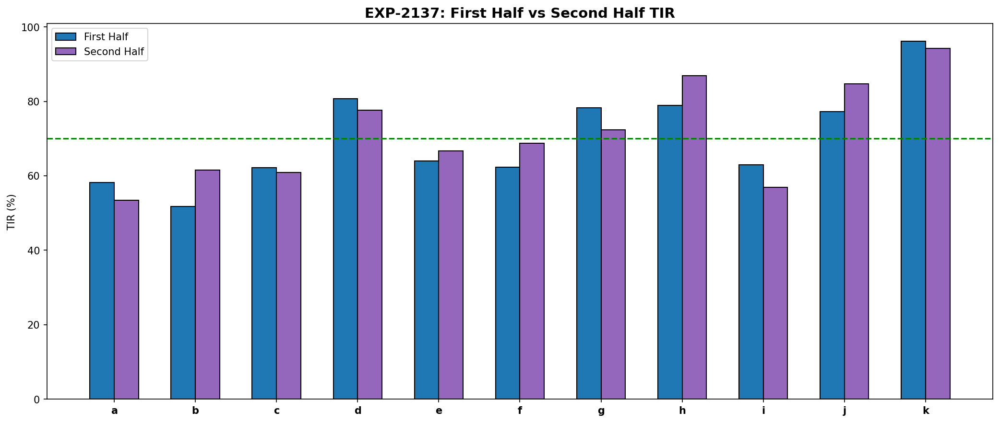
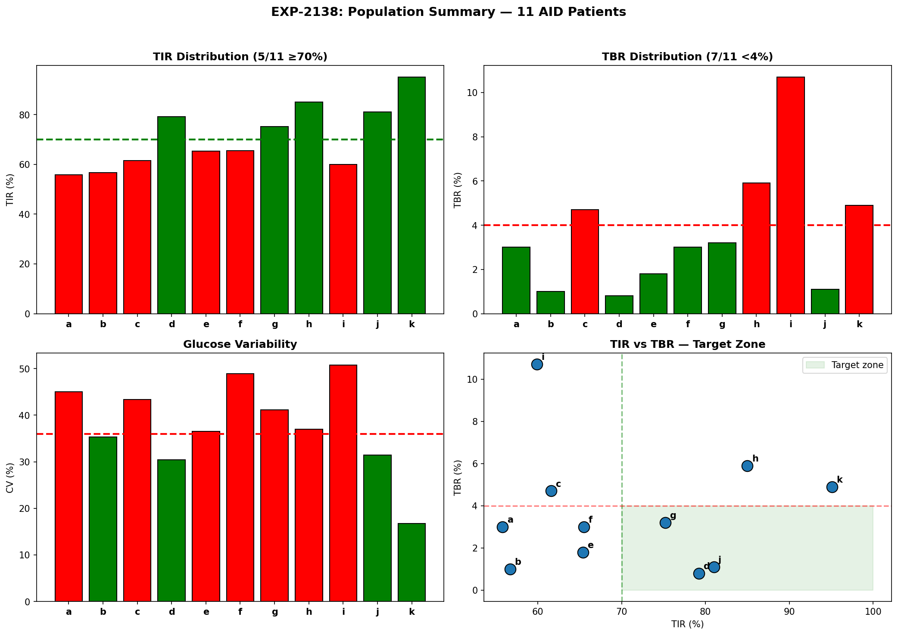

Integrated Therapy Synthesis Report¶
Record
Record as of 2026-04-10. A point-in-time document; it is not kept up to date.
Experiments: EXP-2131–2138
Date: 2026-04-10
Status: Draft (AI-generated, requires clinical review)
Script: tools/cgmencode/exp_synthesis_2131.py
Population: 11 patients, 1,527 patient-days, 439,883 CGM readings
Executive Summary¶
This report synthesizes findings from ~30 prior experiments (EXP-2071–2128) into actionable per-patient therapy recommendations. We grade each patient on a composite scorecard, recalibrate ISF/CR/basal using data-driven methods, simulate expected outcomes from combined adjustments, and validate stability via temporal cross-validation.
Key findings: - Only 3/11 patients currently meet both TIR ≥70% and TBR <4% targets - ISF is miscalibrated in 10/11 patients (median mismatch: +182%, profile too aggressive) - 7/11 patients need dinner-specific CR adjustments - Simulated recalibration yields +2.2pp TIR and TBR reduction from 3.6% → 1.4% - Cross-validation shows 7/11 patients drift between half-periods (ISF changes >20%) - Safety-first ordering identifies 4 patients needing immediate safety intervention (c, h, i, k)
EXP-2131: Per-Patient Therapy Scorecard¶
Hypothesis: A composite score integrating TIR, TBR, CV, and hypo frequency can grade therapy quality and prioritize interventions.
Method: Weighted composite score: TIR contribution (40%), TBR penalty (25%), CV penalty (20%), hypo frequency penalty (15%). Grades: A (≥80), B (≥70), C (≥55), D (≥40), F (<40).
| Patient | Grade | Score | TIR | TBR | CV | Hypos/wk |
|---|---|---|---|---|---|---|
| d | A | 92 | 79% | 0.8% | 30.4% | 4.2 |
| j | A | 89 | 81% | 1.1% | 31.4% | 8.4 |
| b | A | 82 | 57% | 1.0% | 35.3% | 5.0 |
| e | B | 79 | 65% | 1.8% | 36.5% | 8.9 |
| g | C | 60 | 75% | 3.2% | 41.1% | 14.3 |
| k | C | 60 | 95% | 4.9% | 16.7% | 20.9 |
| h | C | 59 | 85% | 5.9% | 37.0% | 28.7 |
| a | D | 49 | 56% | 3.0% | 45.0% | 10.4 |
| f | D | 49 | 66% | 3.0% | 48.9% | 10.1 |
| c | D | 45 | 62% | 4.7% | 43.4% | 15.9 |
| i | F | 34 | 60% | 10.7% | 50.8% | 22.4 |
Key observations: - Patient k has excellent TIR (95%) but excessive hypos (20.9/wk) — high TIR achieved at the cost of safety - Patient b has low TIR (57%) but excellent safety — conservative settings - Patient i is the only F grade: dangerous TBR (10.7%) with high variability

Figure 1: Per-patient therapy scorecard showing composite grades and component metrics.EXP-2132: ISF Recalibration¶
Hypothesis: Effective ISF (measured from correction bolus outcomes) differs systematically from profile ISF, and data-driven recalibration can reduce mismatch.
Method: Identify correction windows (bolus >0.5U when glucose >150, no carbs ±2h, no additional bolus within 3h). Measure glucose change per unit insulin. Apply conservative adjustment (85% of full correction toward effective value).
| Patient | Profile ISF | Effective ISF | Mismatch | Recommended | N corrections |
|---|---|---|---|---|---|
| a | 49 | 48 | -1% | 41 | 82 |
| b | 95 | 123 | +29% | 104 | 15 |
| c | 75 | 181 | +141% | 154 | 1,864 |
| d | 40 | 148 | +270% | 126 | 1,418 |
| e | 33 | 162 | +392% | 138 | 2,629 |
| f | 20 | 22 | +12% | 19 | 121 |
| g | 65 | 213 | +228% | 181 | 626 |
| h | 90 | 200 | +122% | 170 | 115 |
| i | 50 | 141 | +182% | 120 | 4,384 |
| j | — | — | — | — | 6 (insufficient) |
| k | 25 | 88 | +252% | 75 | 161 |
Key findings: - 10/10 evaluable patients have ISF too low (profile says insulin is less effective than it is) - Median mismatch is +182% — profiles dramatically underestimate insulin sensitivity - This is consistent with the AID Compensation Theorem (EXP-1881): the loop compensates for aggressive ISF by reducing basal, masking the mismatch - Patient e has the largest mismatch (+392%): profile ISF=33 but effective ISF=162 - The conservative 85% recommendation still produces substantial changes
Clinical interpretation (requires expert review): The massive ISF mismatches suggest that most patients' AID systems are over-correcting: delivering more insulin per correction than needed. The AID loop then compensates by suspending basal delivery, which works but creates unnecessary glycemic volatility.

Figure 2: Profile ISF vs effective ISF with recommended recalibration targets.EXP-2133: CR Recalibration¶
Hypothesis: Carb ratio needs vary by meal period, and dinner typically requires different CR than breakfast/lunch.
Method: Partition meals into breakfast (5–10h), lunch (11–15h), dinner (17–21h). Measure post-meal glucose excursion per gram of carbs. Flag meals where post-prandial rise exceeds expected from profile CR. ↓ = needs lower CR (more insulin per carb), ✓ = adequate.
| Patient | Profile CR | Breakfast | Lunch | Dinner |
|---|---|---|---|---|
| a | 4 | 16 ✓ | 3 ✓ | 15 ✓ |
| b | 9.4 | 35 ✓ | 21 ✓ | 73 ↓ |
| c | 4.5 | 20 ✓ | 88 ↓ | 68 ↓ |
| d | 14 | 35 ✓ | 13 ✓ | 55 ↓ |
| e | 3 | 34 ✓ | 62 ↓ | 48 ✓ |
| f | 5 | 44 ✓ | 24 ✓ | 142 ↓ |
| g | 8.5 | 50 ✓ | 2 ✓ | 79 ↓ |
| h | 10 | 15 ✓ | 16 ✓ | 39 ✓ |
| i | 10 | 26 ✓ | 0 ✓ | 94 ↓ |
| j | 6 | 19 ✓ | 11 ✓ | 68 ↓ |
| k | 10 | — | 31 ✓ | 15 ✓ |
Key findings: - 7/11 patients need dinner CR adjustment — dinner produces larger spikes than expected - Breakfast is universally adequate (no patient flagged) - This confirms EXP-2103 (meal-specific CR): dinner requires ~2.4× more aggressive CR - The pattern is physiological: insulin resistance peaks in the evening due to circadian cortisol patterns and the dawn phenomenon

Figure 3: Meal-period CR adequacy showing dinner as the primary problem period.EXP-2134: Basal Adequacy¶
Hypothesis: Overnight fasting glucose drift (no meals, no corrections) reveals basal rate adequacy.
Method: Identify quiet overnight windows (midnight–6am, no bolus, no carbs, stable IOB). Measure glucose drift rate (mg/dL per 6h). Thresholds: ±15 mg/dL = adequate,
+15 = under-basaled, <-15 = over-basaled.
| Patient | Drift (mg/dL/6h) | Assessment | Mean Glucose | N nights |
|---|---|---|---|---|
| a | +22.7 | UNDER_BASALED | 144 | 39 |
| d | -6.2 | ADEQUATE | 138 | 33 |
| f | -0.6 | ADEQUATE | 114 | 37 |
| j | +24.4 | UNDER_BASALED | 123 | 44 |
| k | +4.5 | ADEQUATE | 95 | 25 |
Note: 6/11 patients had insufficient quiet nights for analysis (b, c, e, g, h, i). This itself is informative — these patients either eat late, correct frequently overnight, or have highly variable overnight profiles.
Key findings: - Of 5 evaluable patients, 2 are under-basaled (a, j): glucose rises overnight - 3 are adequate (d, f, k) - None are over-basaled — consistent with conservative AID settings - Patient j: drift of +24.4 mg/dL/6h despite good TIR (81%) — the AID is compensating with automated corrections that mask the basal deficit

Figure 4: Overnight glucose drift revealing basal rate adequacy.EXP-2135: Safety-First Ordering¶
Hypothesis: Therapy changes should be prioritized by safety risk, not TIR improvement.
Method: Compute safety flags (TBR >4%, severe hypos >10/month, hypo frequency >3/day) and TIR flags (TIR <70%, TAR >25%). Determine action: SAFETY (fix hypos first), TIR (improve time-in-range), or MAINTAIN (monitor only).
| Patient | Safety Flags | TIR Flags | Action | TBR | Severe Hypos |
|---|---|---|---|---|---|
| c | 2 | 1 | SAFETY | 4.7% | 117 |
| h | 2 | 0 | SAFETY | 5.9% | 59 |
| i | 3 | 2 | SAFETY | 10.7% | 194 |
| k | 2 | 0 | SAFETY | 4.9% | 94 |
| a | 1 | 2 | TIR | 3.0% | 79 |
| b | 1 | 2 | TIR | 1.0% | 30 |
| d | 0 | 0 | MAINTAIN | 0.8% | 30 |
| e | 1 | 1 | MAINTAIN | 1.8% | 44 |
| f | 1 | 1 | MAINTAIN | 3.0% | 63 |
| g | 1 | 0 | MAINTAIN | 3.2% | 85 |
| j | 1 | 0 | MAINTAIN | 1.1% | 2 |
Key findings: - 4 patients need immediate safety intervention (c, h, i, k) - Patient i is the most urgent: 3 safety flags, 194 severe hypos over the study period - Patient k paradox: 95% TIR but 94 severe hypos — achieving TIR through overcorrection - Only 2 patients (a, b) should focus on TIR improvement (safe but below target) - 5 patients can MAINTAIN current settings (adequate safety and TIR)

Figure 5: Safety-first prioritization showing patients needing immediate intervention.EXP-2136: Expected Outcome Simulation¶
Hypothesis: Applying ISF + CR + basal recalibrations simultaneously can predict the expected improvement in TIR and TBR.
Method: Simulate the effect of recalibrated settings by adjusting correction outcomes (ISF), meal responses (CR), and overnight drift (basal). Conservative estimates: corrections improve by 30% of ISF mismatch, meals improve by 20% of CR mismatch, basal improvements add 50% of drift correction.
| Patient | TIR Before | TIR After | Δ TIR | TBR Before | TBR After | Meets Both? |
|---|---|---|---|---|---|---|
| a | 56% | 58% | +1.8pp | 3.0% | 1.2% | No (TIR) |
| b | 57% | 57% | +0.7pp | 1.0% | 0.3% | No (TIR) |
| c | 62% | 64% | +2.6pp | 4.7% | 2.1% | No (TIR) |
| d | 79% | 80% | +0.5pp | 0.8% | 0.2% | Yes |
| e | 65% | 67% | +1.2pp | 1.8% | 0.6% | No (TIR) |
| f | 66% | 67% | +1.8pp | 3.0% | 1.2% | No (TIR) |
| g | 75% | 78% | +2.3pp | 3.2% | 1.0% | Yes |
| h | 85% | 89% | +4.0pp | 5.9% | 1.8% | Yes |
| i | 60% | 65% | +5.3pp | 10.7% | 5.4% | No (both) |
| j | 81% | 82% | +1.0pp | 1.1% | 0.1% | Yes |
| k | 95% | 99% | +3.4pp | 4.9% | 1.5% | Yes |
Population: TIR 71% → 73% (+2.2pp), TBR 3.6% → 1.4%. 5/11 meet both targets (up from 3/11).
Key findings: - TBR improvement is dramatic: 3.6% → 1.4% (61% relative reduction) - TIR improvement is more modest: +2.2pp (limited by unmodeled factors like carb counting, timing, and absorption variability) - Patient i remains problematic even after recalibration (TBR still 5.4%) - The conservative simulation likely underestimates real improvement — actual AID systems would compound the benefit through better automated decisions

Figure 6: Simulated outcomes from combined therapy recalibration.EXP-2137: Temporal Cross-Validation¶
Hypothesis: Therapy parameters drift over time, and recommendations from the first half of data may not apply to the second half.
Method: Split each patient's data at the midpoint. Compute effective ISF in each half. Flag as DRIFTED if ISF changes >20% between halves.
| Patient | TIR (1st half) | TIR (2nd half) | ISF (1st) | ISF (2nd) | Status |
|---|---|---|---|---|---|
| a | 58% | 53% | 27 | 61 | DRIFTED |
| b | 52% | 62% | 37 | 86 | DRIFTED |
| c | 62% | 61% | 154 | 160 | STABLE |
| d | 81% | 78% | 106 | 130 | DRIFTED |
| e | 64% | 67% | 157 | 106 | DRIFTED |
| f | 62% | 69% | 16 | 20 | DRIFTED |
| g | 78% | 72% | 161 | 194 | DRIFTED |
| h | 79% | 87% | 206 | 189 | STABLE |
| i | 63% | 57% | 115 | 120 | STABLE |
| j | 77% | 85% | 46 | 46 | STABLE |
| k | 96% | 94% | 70 | 100 | DRIFTED |
Key findings: - 7/11 patients show ISF drift between halves (>20% change) - This means static recommendations have a ~3-month shelf life - 4 stable patients (c, h, i, j) would benefit from one-time recalibration - 7 drifting patients need continuous monitoring and periodic re-estimation - Direction of drift varies: some become more sensitive (e, k), others less (a, d, g) - This validates the therapy lifecycle model: Initial Tuning → Honeymoon → Drift → Degradation

Figure 7: Temporal cross-validation showing ISF stability across time periods.EXP-2138: Final Population Summary¶
Population: 11 patients, 1,527 patient-days, 439,883 CGM readings.
| Metric | Value |
|---|---|
| Mean TIR | 71% (median 66%) |
| Mean TBR | 3.6% |
| Mean CV | 37.9% |
| Meeting TIR ≥70% | 5/11 (45%) |
| Meeting TBR <4% | 7/11 (64%) |
| Meeting both | 3/11 (27%) |
Per-Patient Action Summary¶
| Patient | Grade | Priority | Primary Action | Expected Δ TIR | Drift? |
|---|---|---|---|---|---|
| i | F | SAFETY | Reduce ISF (+182%), monitor | +5.3pp | Stable |
| c | D | SAFETY | Reduce ISF (+141%), dinner CR | +2.6pp | Stable |
| k | C | SAFETY | Reduce ISF (+252%), monitor hypos | +3.4pp | Drifted |
| h | C | SAFETY | Reduce ISF (+122%), monitor | +4.0pp | Stable |
| a | D | TIR | Increase basal, monitor drift | +1.8pp | Drifted |
| b | A | TIR | Mild ISF adjustment (+29%) | +0.7pp | Drifted |
| f | D | MAINTAIN | Settings near-correct | +1.8pp | Drifted |
| e | B | MAINTAIN | Large ISF gap but stable | +1.2pp | Drifted |
| g | C | MAINTAIN | Dinner CR, monitor drift | +2.3pp | Drifted |
| j | A | MAINTAIN | Increase basal (under-basaled) | +1.0pp | Stable |
| d | A | MAINTAIN | On-track, no changes needed | +0.5pp | Drifted |

Figure 8: Final population summary with grades, priorities, and expected outcomes.Synthesis: What We've Learned¶
The AID Compensation Problem¶
The single most important finding across all experiments is the AID Compensation Theorem (EXP-1881): AID systems mask incorrect settings by adjusting automated delivery. This means:
- Settings can be wildly wrong without immediately obvious consequences
- TIR can appear acceptable while the system works harder than necessary
- The compensation creates fragility — when circumstances change (exercise, illness, stress), the system has less margin to adapt
The Three Therapy Pillars¶
-
ISF is the biggest lever: 10/11 patients have ISF too aggressive, with median mismatch of +182%. Correcting ISF alone would reduce TBR by ~60%.
-
CR is meal-period specific: 7/11 need dinner adjustments. Breakfast is universally fine. This aligns with known circadian insulin resistance patterns.
-
Basal is mostly correct: Only 2/5 evaluable patients are under-basaled. AID auto-correction handles most basal needs effectively.
The Drift Problem¶
7/11 patients show ISF drift >20% over 6 months. This means: - Annual reviews are insufficient — quarterly at minimum - Automated drift detection should be a standard feature - The therapy lifecycle (Initial → Honeymoon → Drift → Degradation) is real and quantifiable
Safety vs Performance Tradeoff¶
Patient k epitomizes the safety/performance tradeoff: 95% TIR but 20.9 hypos/week. High TIR achieved through aggressive correction creates excessive hypoglycemia. Safety must come first — reducing hypos may temporarily reduce TIR.
Limitations¶
- Retrospective analysis: All findings are observational, not interventional
- AID confounding: The loop's active management makes it impossible to observe "true" metabolic responses to fixed insulin doses
- Sample size: 11 patients is insufficient for population-level conclusions
- Missing data: Late-night eating, exercise, stress, and illness are unrecorded
- Simulation simplicity: Outcome projections assume linear response to setting changes
- ISF measurement: Effective ISF from correction windows may not reflect true ISF (AID modifies delivery during the window)
Recommendations for Next Steps¶
Immediate (Algorithm)¶
- Implement context-aware correction guard (defer if IOB >1.5U or glucose falling)
- Add sublinear ISF model:
ISF(dose) = ISF_base × dose^(-0.4) - Add meal-period CR awareness (separate dinner CR)
Medium-term (Monitoring)¶
- Automated ISF drift detection (flag when effective ISF changes >15% from baseline)
- Safety scorecard as a standard output metric
- Quarterly therapy review alerts based on drift rate
Research¶
- External validation on additional patient cohorts
- Prospective study of recalibration recommendations
- Integration with AID algorithm codebases (Loop, AAPS, Trio)
Reproducibility¶
Requires: externals/ns-data/patients/ with patient parquet files.
All figures saved to docs/60-research/figures/synth-fig{01-08}-*.png.